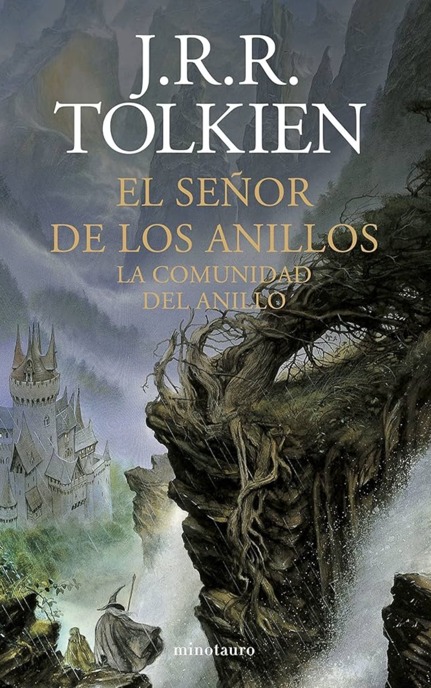
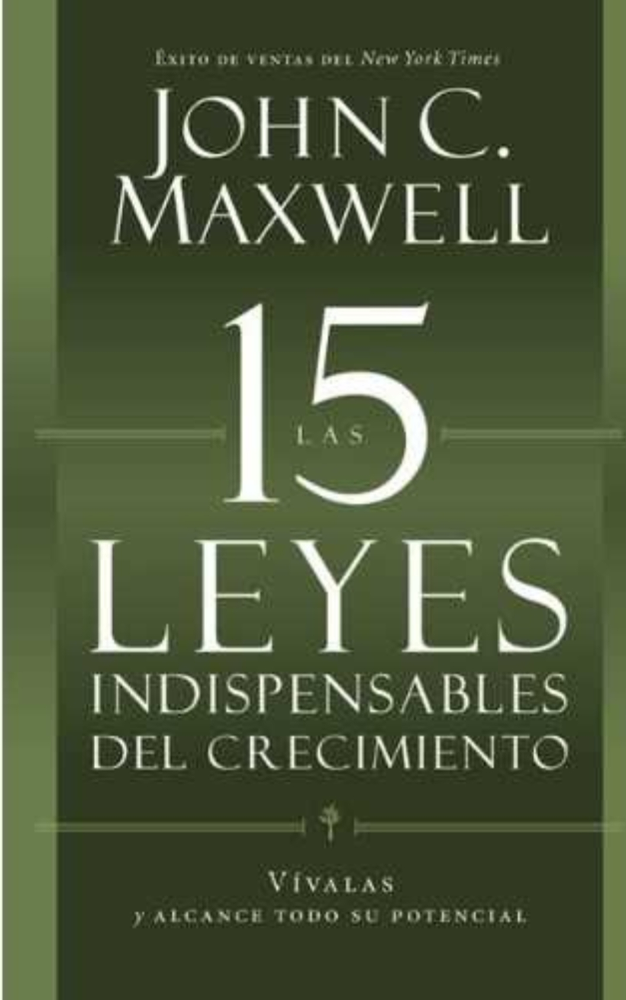
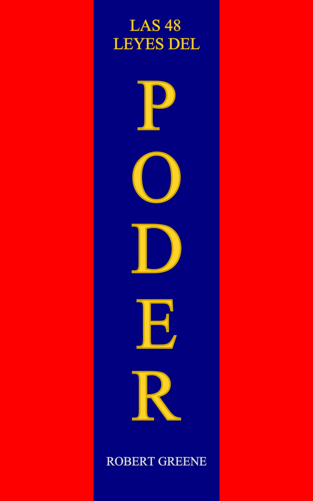

Catálogo de libros
Diferentes géneros

El Señor de los Anillos: La Comunidad del Anillo
"El Señor de los Anillos: La Comunidad del Anillo" es la primera parte de la épica trilogía
escrita por J.R.R. Tolkien. La historia comienza en la pacífica región de la Comarca, donde
el hobbit Frodo Bolsón hereda un anillo aparentemente inofensivo de su tío Bilbo. Pronto se
revela que este anillo es, en realidad, el Anillo Único, una poderosa herramienta creada por
el oscuro señor Sauron para dominar la Tierra Media.

Las 15 leyes indispensables del crecimiento
"Las 15 leyes indispensables del crecimiento" de
John C. Maxwell es una guía práctica para el desarrollo personal y profesional. Maxwell
presenta quince principios esenciales que cualquiera puede aplicar para fomentar su
crecimiento.
El libro ofrece ejemplos prácticos y estrategias concretas para aplicar estos principios,
con el objetivo de ayudar a los lectores a alcanzar su máximo potencial y continuar
creciendo de manera constante.
Amor, Sexo y Noviazgo
"Amor, Sexo y Noviazgo" es un libro escrito por
Sixto Porras, que ofrece una guía práctica y reflexiva sobre cómo abordar las relaciones
amorosas desde una perspectiva saludable y fundamentada en valores. Porras, reconocido
conferencista y director regional de Enfoque a la Familia, aborda temas fundamentales
relacionados con el amor, el sexo y el noviazgo, proporcionando consejos tanto para jóvenes
como para adultos que desean construir relaciones significativas y duraderas.
Cien Años de Soledad
"Cien Años de Soledad" es una obra maestra de la
literatura latinoamericana escrita por Gabriel García Márquez. Publicada en 1967, la novela
es un pilar del realismo mágico y narra la historia de la familia Buendía a lo largo de
siete generaciones en el ficticio pueblo de Macondo.
La historia comienza con José Arcadio Buendía y su esposa Úrsula Iguarán, quienes fundan
Macondo. A medida que la familia crece, la novela explora los destinos entrelazados y
repetitivos de sus descendientes, marcados por temas de soledad, amor, poder y el ineludible
peso del destino.
Harry Potter y El Legado Maldito
"Harry Potter y el legado maldito" es una obra de
teatro escrita por Jack Thorne, basada en una historia original de J.K. Rowling, John
Tiffany y Jack Thorne. La obra se estrenó en el West End de Londres en 2016 y el guion fue
publicado como un libro ese mismo año. Es la octava historia en el universo de Harry Potter
y tiene lugar 19 años después de los eventos de "Harry Potter y las Reliquias de la Muerte".

Las 48 leyes del Poder
"Las 48 Leyes del Poder" es un libro escrito por Robert Greene, publicado en 1998. El libro
ofrece una serie de principios destinados a ayudar a las personas a comprender y utilizar el
poder en diversas situaciones sociales y profesionales. Greene utiliza ejemplos históricos,
filosóficos y literarios para ilustrar cada ley, proporcionando un manual práctico para
aquellos que desean ascender en el ámbito del poder.
El Señor de los Anillos: La Comunidad del Anillo
"El Señor de los Anillos: La Comunidad del Anillo" es la primera parte de la épica trilogía escrita por J.R.R. Tolkien. La historia comienza en la pacífica región de la Comarca, donde el hobbit Frodo Bolsón hereda un anillo aparentemente inofensivo de su tío Bilbo. Pronto se revela que este anillo es, en realidad, el Anillo Único, una poderosa herramienta creada por el oscuro señor Sauron para dominar la Tierra Media.
Las 15 leyes indispensables del crecimiento
"Las 15 leyes indispensables del crecimiento" de John C. Maxwell es una guía práctica para el desarrollo personal y profesional. Maxwell presenta quince principios esenciales que cualquiera puede aplicar para fomentar su crecimiento. El libro ofrece ejemplos prácticos y estrategias concretas para aplicar estos principios, con el objetivo de ayudar a los lectores a alcanzar su máximo potencial y continuar creciendo de manera constante.
Amor, Sexo y Noviazgo
"Amor, Sexo y Noviazgo" es un libro escrito por Sixto Porras, que ofrece una guía práctica y reflexiva sobre cómo abordar las relaciones amorosas desde una perspectiva saludable y fundamentada en valores. Porras, reconocido conferencista y director regional de Enfoque a la Familia, aborda temas fundamentales relacionados con el amor, el sexo y el noviazgo, proporcionando consejos tanto para jóvenes como para adultos que desean construir relaciones significativas y duraderas.
Cien Años de Soledad
"Cien Años de Soledad" es una obra maestra de la literatura latinoamericana escrita por Gabriel García Márquez. Publicada en 1967, la novela es un pilar del realismo mágico y narra la historia de la familia Buendía a lo largo de siete generaciones en el ficticio pueblo de Macondo. La historia comienza con José Arcadio Buendía y su esposa Úrsula Iguarán, quienes fundan Macondo. A medida que la familia crece, la novela explora los destinos entrelazados y repetitivos de sus descendientes, marcados por temas de soledad, amor, poder y el ineludible peso del destino.
Harry Potter y El Legado Maldito
"Harry Potter y el legado maldito" es una obra de teatro escrita por Jack Thorne, basada en una historia original de J.K. Rowling, John Tiffany y Jack Thorne. La obra se estrenó en el West End de Londres en 2016 y el guion fue publicado como un libro ese mismo año. Es la octava historia en el universo de Harry Potter y tiene lugar 19 años después de los eventos de "Harry Potter y las Reliquias de la Muerte".
Las 48 leyes del Poder
"Las 48 Leyes del Poder" es un libro escrito por Robert Greene, publicado en 1998. El libro ofrece una serie de principios destinados a ayudar a las personas a comprender y utilizar el poder en diversas situaciones sociales y profesionales. Greene utiliza ejemplos históricos, filosóficos y literarios para ilustrar cada ley, proporcionando un manual práctico para aquellos que desean ascender en el ámbito del poder.